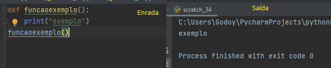
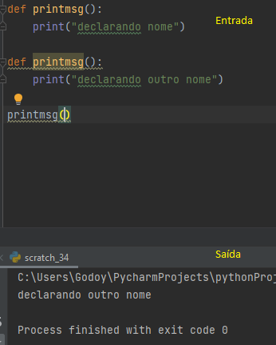
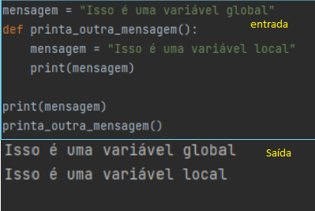
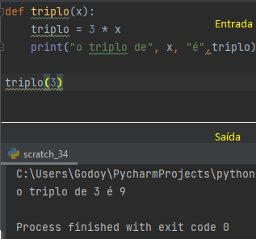
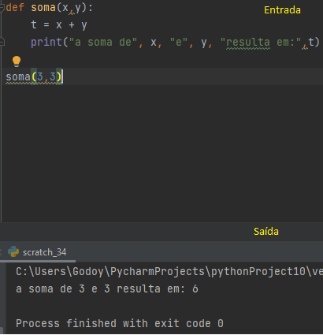
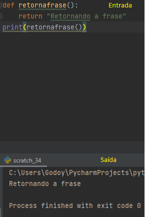
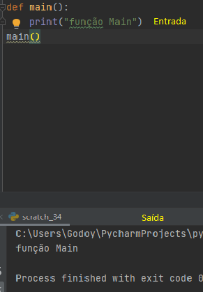
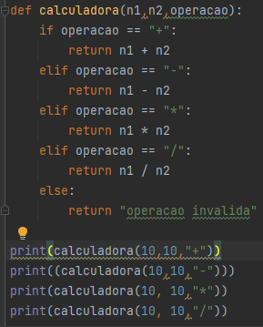

As funções são algoritimos pré estabelecidos que ao serem chamadas realizam determinada ação
Elas ajudam a tornar o código mais legível,menos repetitivo e reutilizável.
Algumas funções já vem pré-definidas como porexemplo:
Print():Serve para exibir mensagens na tela.
Int():serve para guardar números inteiros.
str():Seve para guardar textos.
Float():Determina se um elemento deve flutar para esqueda ou para direita
Len()
o nome da funçaõ não pode ter caracteres especiais como "ç" ou "~"
Não pode começãr com Números e nem com letra
Além disso existem nomes já reservados como:
And,as,assert,break,class,continue,entre outras
uma função pode ser redefinida,declarando-a novamente com o mesmo nome,pois ela irá assumir o comportamento da útima declaraçãodevido ao efeito cascata.
O escopo de uma variável é o local onde ela esta armazenada.ou seja,se criarmos uma variável no escopo de uma funçãoo,ela existe apenas dentro da função.
Argumentos são as informações passadas para uma determinada função.
Parâmetros são variáveis criadas na definição da função que serão utilizadas em sua execução
Exemplo de função com um parâmetro:
Exemplo de função com múltiplos parâmetros
O return pode ser utilizado para receber um valor de uma função,sendo possível receber o retorno de qualquer tipo de dados como strings,números inteiros (int) e decimais (float),entre outros.
Quando não informamos o valor de retorno afunção retorna none e qualquer código adicionado depois não será executado.
Serve para manter o código organizado,deve ser chamada no final do código.
Exemplo de calculadora
